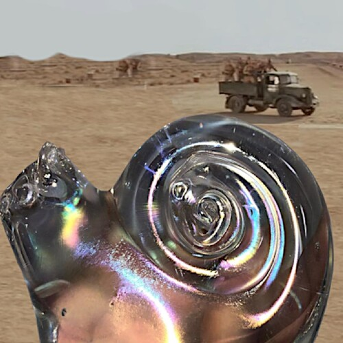

My Greatest Archaeological Discovery, That Belonged In A Museum!

My Greatest Archaeological Discovery, That Belonged In A Museum!
I was digging in Eastern Europe,
it was an old Airplane Field.
There was a number of bunkers,
and there was a house in the city that still had bullet holes in it.
It was meant to be a reminder,
of what the city walls used to look like.
They were building a new apartment complex,
in preparation for new infrastructure there was a new dig.
It was maybe four times my height,
this was right at edge of the old air-field
It was used as a land fill right after the war ended,
or they were expanding it, by bringing rubble from another land-fill.
It was a rough day,
I woke up early.
And set of for the dig site,
I had plenty of time left before the work crew showed up.
So, I focused on careful excavation of the site,
layer by layer, artifact by artifact.
I found many bottles,
some of them could have gone as far back as early 1800s, it seemed.
I found graphite sticks dating back to early 40s,
these were likely of military origin, used in batteries to power portable equipment.
I hit a patch of Redware[1],
but it was hard to be sure, because of all the red shingles and crushed brick.
As I was trying to make sense of what I had on this site,
I remembered a kid from across the city with a jar of black power.
Crazy, son of a gun, was saying it was Trinitrotoluene,
that he extracted from rusted armor piercing rounds, as in tank armor.
I hope he was wrong, and I hope is is OK,
the only reason to have a deadly jar like that, is to try to light it later on, poor bastard.
Just last month, early March 2021, a 550 lb (or quarter ton) bomb was discovered[2],
over at Popowice, which wasn't that far away, it is no joke.
The expert states that it was a Russian bomb of German manufacture, and says that they have a name for them "Rusty Death"[3],
and explains that the rust is only on the surface, the bomb is still an active explosive.
Search internet for 550-pound WWII bomb In Munich, 2012[4],
to see how enormous, and city shaking those explosions are - since these bombs cannot be moved, the only safe way to remove them, is to detonate them on purpose after evacuating the town.
You don't become an Archaeologist,
Archaeology finds you, when it has something to say.
Then I saw it, it was a shiny colorful and beautiful round object,
about the size of my hand.
It was a crystal, at first I thought the color came from it sitting in the ground,
but now, I am certain, it was an iridescent crystal.
I brushed away the deep dark soil, and gasped,
and just stood there holding it.
It was a crystal snail,
it was not some part of a expensive chandelier, it was a work of art that stood on its own.
I couldn't believe it,
I found a treasure lost to history, it could be much much older than the dig site, a family heirloom, maybe.
But you know how it is,
history will let you hold it, but it belongs to her.
For the moment that I held it in my hand,
it seemed like time has stopped.
But now, it begun flowing again,
and almost like after a loud explosion, I regained my hearing, to discover I am being shouted at.
The workers, arrived a the site,
they were packed in the bed of a huge dump truck that they used for moving the rubble as they dig.
They were shouting because they saw a Nine Year old boy,
by the flat wall of a deep hole, these walls have a tendency to collapse.
I still had to crawl out of there, it was still very deep for me,
and the earth was really soft.
I threw my Crystal Snail up on top of the wall I had to climb,
and as I made my way up there among all the shouting and the truck being really close,
I lost site of it,
and I searched for it courageously until the workers were right there.
But it was gone,
I lost my magical treasure.
Post Scriptum,
Here, I mark the location of my dig site[5],
and where I lost my magical crystal snail, 51°07'34.0"N 16°57'25.0"E, it could be beneath the sidewalk, but perhaps the hole I was in was the foundation for that six story building.
My Greatest Archaeological Discovery, That Belonged In A Museum! References
[1]: https://en.wikipedia.org/wiki/Redware
[2]: https://www.polishnews.co.uk/wroclaw-250-kg-bomb-detonated-at-the-training-ground-recording/
[3]: https://www.youtube.com/watch?v=ipVhWXVU_ts
[4]: https://www.youtube.com/watch?v=PwVAuokrHrI
[5]: https://www.google.com/maps/place/51%C2%B007'34.0%22N+16%C2%B057'25.0%22E/@51.12611,16.9564088,177m/data=!3m2!1e3!4b1!4m14!1m7!3m6!1s0x470fea782aa2b505:0xf1a0f3fd873694e3!2sTa%C5%84skiego+17,+54-129+Wroc%C5%82aw,+Poland!3b1!8m2!3d51.125645!4d16.9578668!3m5!1s0x0:0x0!7e2!8m2!3d51.1261095!4d16.956956